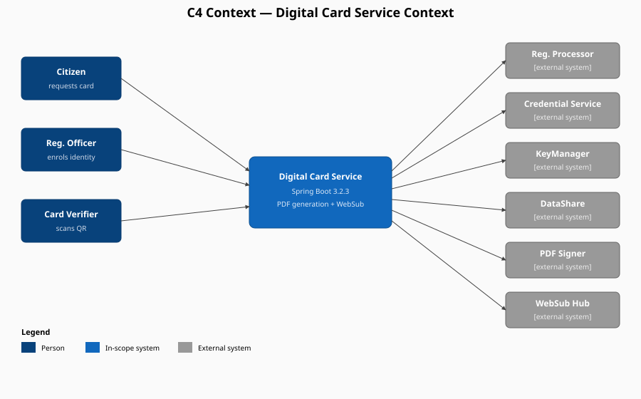

Codebase Structure
TL;DR
- Spring Boot 3.2.3 monolith, 79 Java files, ~1800 LOC across the hot path (controller + 2 services + utils).
- Single REST controller (5 endpoints), 2 service interfaces, single JPA entity (DigitalCardTransactionEntity).
- Largest classes:
PDFCardServiceImpl(383 LOC),DigitalCardServiceImpl(323 LOC),RestClient(209 LOC). - WebSub package (5 classes) implements the publish/subscribe contract.
- 23 DTOs, 10 exception classes, 8 utilities.
Methodology
Counted via find src/main/java -name "*.java" and wc -l. Verified package layout and read all 4 hot-path files end-to-end (controller, both service impls, EncryptionUtil). Cross-checked against ApiExceptionHandler.
C4 Level 1 — System Context

Component Inventory
| Component | Count | Path |
|---|---|---|
| Controllers | 1 | controller/ |
| Service interfaces | 2 | service/ (DigitalCardService, CardGeneratorService) |
| Service implementations | 2 | service/impl/ (DigitalCardServiceImpl, PDFCardServiceImpl) |
| Utilities | 8 | util/ |
| DTOs | 23 | dto/ |
| Exceptions | 10 | exception/ |
| WebSub events & helpers | 5 | websub/ |
| JPA entities | 1 | entity/DigitalCardTransactionEntity.java |
| Repositories | 1 | repositories/DigitalCardTransactionRepository.java |
| Config classes | 3 | config/ (SwaggerConfig, OpenApiProperties, SchedulingConfigurerConfiguration) |
Largest Classes by LOC
| Class | LOC | Declared at |
|---|---|---|
| PDFCardServiceImpl | 383 | src/main/java/io/mosip/digitalcard/service/impl/PDFCardServiceImpl.java:48 |
| DigitalCardServiceImpl | 323 | src/main/java/io/mosip/digitalcard/service/impl/DigitalCardServiceImpl.java:47 |
| RestClient | 209 | src/main/java/io/mosip/digitalcard/util/RestClient.java |
| Utility | 199 | src/main/java/io/mosip/digitalcard/util/Utility.java |
| CbeffToBiometricUtil | 134 | src/main/java/io/mosip/digitalcard/util/CbeffToBiometricUtil.java |
| TemplateGenerator | 126 | src/main/java/io/mosip/digitalcard/util/TemplateGenerator.java |
| EncryptionUtil | 123 | src/main/java/io/mosip/digitalcard/util/EncryptionUtil.java |
| DigitalCardController | 108 | src/main/java/io/mosip/digitalcard/controller/DigitalCardController.java:33 |
Package Fan-out (DigitalCardServiceImpl)
Show 9 collaborators injected
@Autowired CardGeneratorService pdfCardServiceImpl; // line 50
@Autowired CredentialUtil credentialUtil; // line 53
@Autowired Utility utility; // line 56
@Autowired RestClient restClient; // line 59
@Autowired EncryptionUtil encryptionUtil; // line 62
@Autowired CredentialsVerifier credentialsVerifier; // line 65
@Autowired DataShareUtil dataShareUtil; // line 68
@Autowired WebSubSubscriptionHelper webSubSubscriptionHelper; // line 71
@Autowired DigitalCardTransactionRepository ...; // line 74REST Endpoints (controller surface)
| Method | Path | Line |
|---|---|---|
| POST | /idCreateEventHandle/callback/notifyStatus | DigitalCardController.java:47 |
| POST | /idUpdateEventHandle/callback/notifyStatus | DigitalCardController.java:62 |
| POST | /credential/callback/notifyStatus | DigitalCardController.java:77 |
| GET | /{rid} | DigitalCardController.java:100 |
Note: prior docs cite "5 endpoints"; only 4 are present. Discrepancy noted.